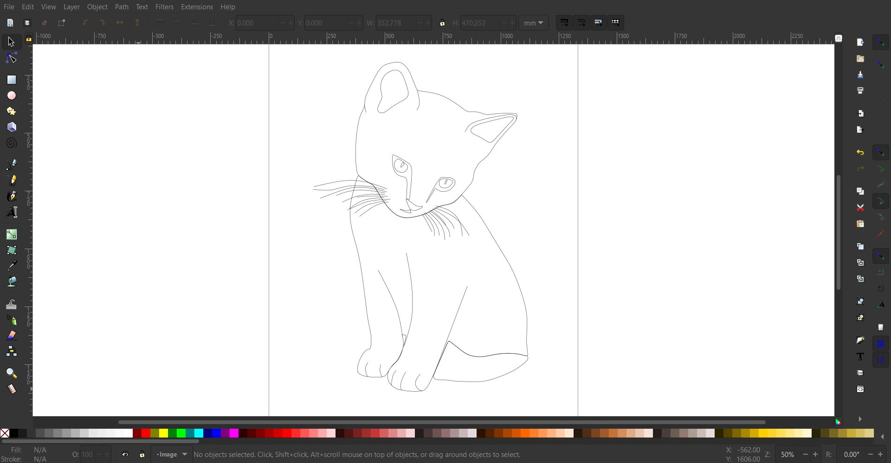

This page explains the process of my vector drawing
Step 1
- Have a photo of an animal that has a simple position
- Outline the animal and put in lines for details
- Change colour and Line colour
- Save image as jpg/png


Step 2

Step 3

Step 4